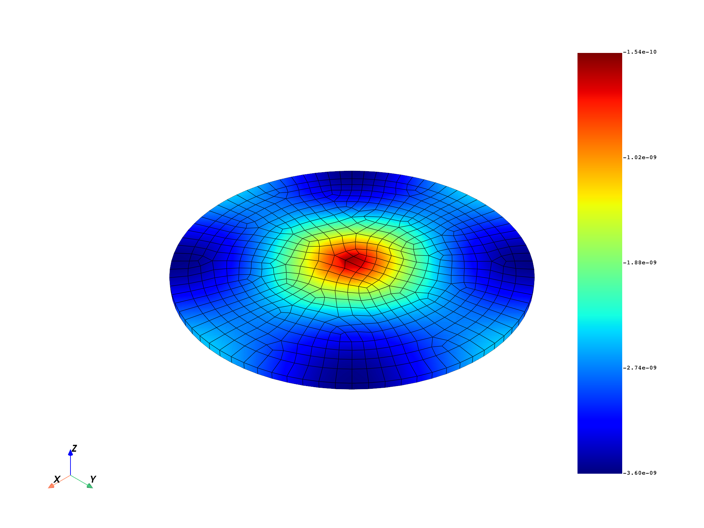
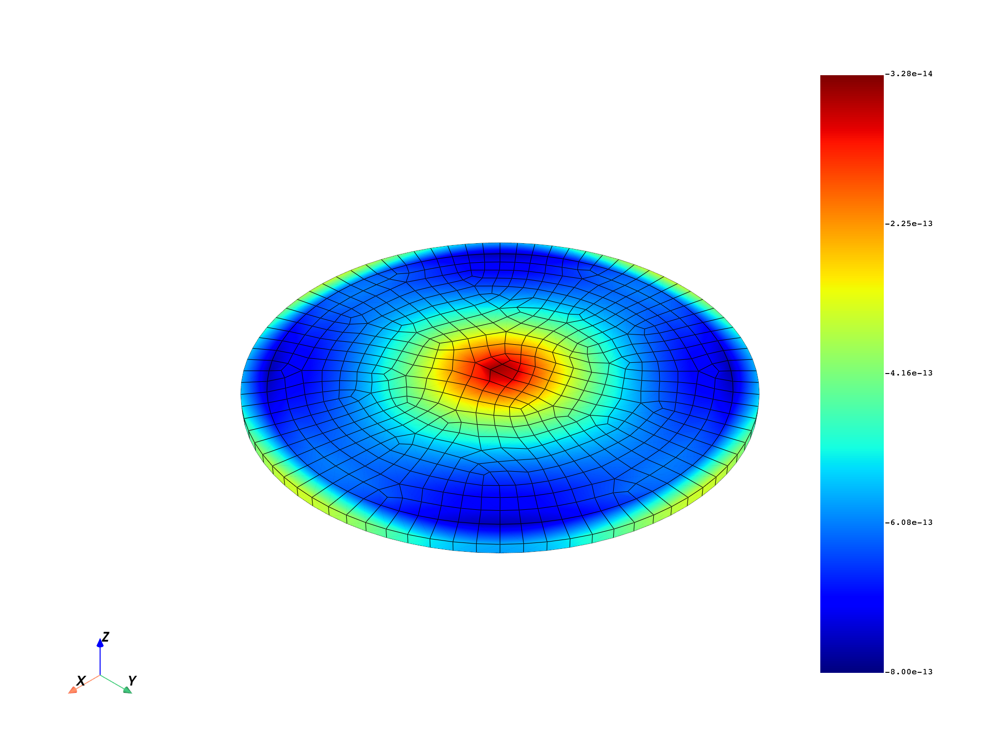

Note
Click here to download the full example code
Exchange data between servers#
In this example, two DPF servers are started, and a workflow is created with a part on both servers. This example shows how you can read data from a given machine and transform this data on another machine without any more difficulties than working on a local computer.
from ansys.dpf import core as dpf
from ansys.dpf.core import examples
from ansys.dpf.core import operators as ops
Create two servers#
Use the start_local_server()
method to start two servers on your local machine. If you have another server,
you can use the connect_to_server()
method to connect to any DPF server on your network.
The as_global attributes allows you to choose whether a server is stored
by the module and used by default. This example sets the first server as the default.
server1 = dpf.start_local_server(as_global=True, config=dpf.AvailableServerConfigs.GrpcServer)
server2 = dpf.start_local_server(as_global=False, config=dpf.AvailableServerConfigs.GrpcServer)
# Check that the two servers are listening on different ports.
print(
server1.port if hasattr(server1, "port") else "",
server2.port if hasattr(server2, "port") else "",
)
50054 50055
Send the result file#
The result file is sent to the temporary directory of the first server. This file upload is useless in this case because the two servers are local machines.
file_path_in_tmp = examples.find_complex_rst(server=server1)
Create a workflow on the first server#
Create the model
model = dpf.Model(file_path_in_tmp)
# Read displacement
disp = model.results.displacement()
disp.inputs.time_scoping(len(model.metadata.time_freq_support.time_frequencies))
Create a workflow on the second server#
# Change the Cartesian coordinates to cylindrical coordinates cs
coordinates = ops.geo.rotate_in_cylindrical_cs_fc(server=server2)
# Create the Cartesian coordinate cs
cs = dpf.fields_factory.create_scalar_field(12, server=server2)
cs.data = [1, 0, 0, 0, 1, 0, 0, 0, 1, 0, 0, 0]
coordinates.inputs.coordinate_system(cs)
# Choose the radial component to plot
comp = dpf.operators.logic.component_selector_fc(coordinates, 0, server=server2)
Pass data from one server to another#
fc_disp = disp.outputs.fields_container()
fc_copy = fc_disp.deep_copy(server=server2)
mesh_copy = model.metadata.meshed_region.deep_copy(server=server2)
# give a mesh to the field
fc_copy[0].meshed_region = mesh_copy
fc_copy[1].meshed_region = mesh_copy
coordinates.inputs.field(fc_copy)
Plot the output#
out = comp.outputs.fields_container()
# real part
mesh_copy.plot(out.get_field({"complex": 0}))
# imaginary part
mesh_copy.plot(out.get_field({"complex": 1}))
- 
- 
Total running time of the script: ( 0 minutes 15.514 seconds)